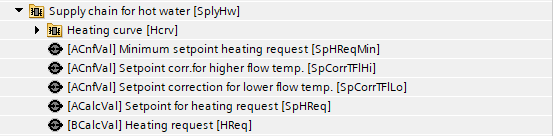
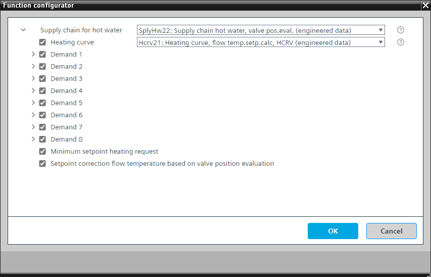
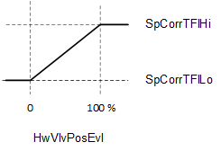
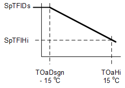

[SplyHw22] Supply chain hot water, data exchange with other plants, with valve position evaluation, heating curve
Program block, name / node subtype: [SplyHw22] Supply chain hot water, data exchange with other plants, with valve position evaluation, heating curve
Library hierarchy: Coordination
Family: SplyHw
Project tree | Diagram |
|---|---|
|
 |
|

Configurator


Program blocks are stored in the library without I/Os. Use the auto-create and auto-connect functions to create I/Os and/or to connect them to the interface blocks, e.g., R_A, CMD_B. Alternatively, take the I/Os from the folder containing the predefined I/Os in the library and/or from the plant and connect them to the interface blocks.
Function
SplyHw22 connects one or more hot water consumers, e.g., air handlers, to the heating plant.
The most important functions in the program block are:
- Heating demand collection and evaluation
- Hot water temperature setpoint calculation and its correction based on valve position evaluation of the consumers
Mandatory elements
Name | Description | Type | Alarm / Notification class | Trend / Type | |
|---|---|---|---|---|---|
|
SpHReq | Setpoint for heating request | ACalcVal: Analog calculated value | N/A | N/A | |
HReq | Heating request | BCalcVal: Binary calculated value | N/A | N/A | |
Optional elements
Name | Description | Type | Alarm / Notification class | Trend / Type | |
|---|---|---|---|---|---|
|
SpHReqMin | Minimum setpoint heating request | ACnfVal: Analog configuration value | N/A | N/A | |
Hcrv | Heating curve | [Hcrv21] Heating curve, flow temperature setpoint calculation, with HCRV | N/A | N/A | |
Dmd(1) | Demand (1) | Chart | N/A | N/A | |
Dmd(2) | Demand (2) | Chart | N/A | N/A | |
Dmd(3) | Demand (3) | Chart | N/A | N/A | |
Dmd(4) | Demand (4) | Chart | N/A | N/A | |
Dmd(5) | Demand (5) | Chart | N/A | N/A | |
Dmd(6) | Demand (6) | Chart | N/A | N/A | |
Dmd(7) | Demand (7) | Chart | N/A | N/A | |
Dmd(8) | Demand (8) | Chart | N/A | N/A | |
Further options
Description |
|---|
|
Setpoint correction for flow temperature based on valve position evaluation Elements that belong to this option: Setpoint correction for lower flow temperature | ACnfVal: Analog configuration value Setpoint correction for higher flow temperature | ACnfVal: Analog configuration value |
Further information
Heating demand collection and evaluation
SplyHw22 receives binary hot water demand signals [HwDmd1...n], [WarmUpDmd1...n] from consumers, and calculates binary values for the heating request and warm-up request output pins [HReq], [WarmUpReq]. If at least one hot water demand signal or warm-up demand signal is True, the corresponding output pin(s) is True.
Hot water temperature setpoint calculation and its correction based on valve position evaluation of the consumers
SplyHw22 receives valve position values from consumers (VlvPosVal1...n), and calculates a representative valve position value [HwVlvPosEvl]. [HwVlvPosEvl] is the average of valve positions that:
- Are ≥ 10 %
- Have no disturbances
- Are from consumers with an active hot water demand signal
A linear function (configurable) uses [HwVlvPosEvl] to calculate a hot water supply temperature setpoint correction value between SpCorrTFlHi and SpCorrTFlLo:

SpCorrTFlHi | Setpoint correction for higher flow temperature | SpCorrTFlLo | Setpoint correction for lower flow temperature |
HwVlvPosEvl | Supply chain hot water valve position evaluation |
The calculated setpoint correction value is added to the base setpoint (the base setpoint is calculated by applying a heating curve (see figure) based on outside air temperature [TOa]). The result is the hot water heating request setpoint value [SpHReq] (chart output pin).

SpTFlDs | Flow temperature setpoint for design outside temperature | SpTFlHi | Flow temperature setpoint for high outside temperature |
TOaDsgn | Design outside temperature | TOaHi | Outside temperature high |
The suggested setpoint value [SpHReq] can be delivered to the heating plant or other coordinator(s) (SplyChw23).